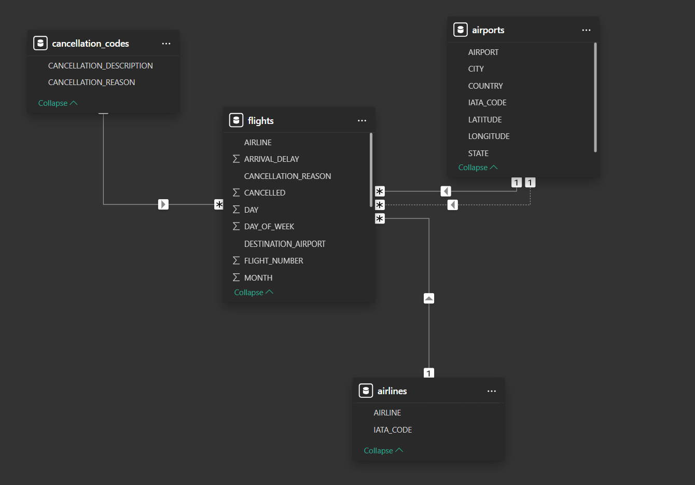

Project Details
This Airline Report Dashboard is built for sellers who need a clear, credible way to present flight performance insights. It turns airline reporting data into a visual format, helping users scan key patterns and review performance information quickly.
The dashboard is designed to help stakeholders, such as teams at the Federal Aviation Administration, understand flight performance by drilling into delays and cancellations. It helps users analyze performance by airport, airline, and day of the week to determine why flights were disrupted and identify which airlines are the most or least reliable.
Tools Used
Power BI and Power Query.
Main Questions to Answer
- Are the airlines reliable? If so, which ones are the most and least reliable?
- Why are the flights getting disrupted?
Key Business Metrics
- Total Flights On-Time
- Total Flights Cancelled
- Total Flights Delayed
These metrics are presented in KPI cards and supported by additional visuals for deeper performance analysis.
Data Model
A STAR schema data model was created with three dimension tables, cancellation_codes, airports, and airlines, plus one fact table, flights.

DAX Measures
% of Flights Cancelled = DIVIDE(flights[Total Flights Cancelled], [Total Flights])
% of Flights Delayed = DIVIDE(flights[Total Flights Delayed], [Total Flights])
% of Flights On-Time = DIVIDE(flights[Total Flights On-Time], [Total Flights])
Total Flights = COUNTROWS(flights)
Total Flights Cancelled = CALCULATE(COUNTROWS(flights), flights[CANCELLED] = 1)
Total Flights Delayed = CALCULATE([Total Flights], flights[Status] = "Delayed")
Total Flights On-Time = CALCULATE([Total Flights], flights[Status] = "On-Time")